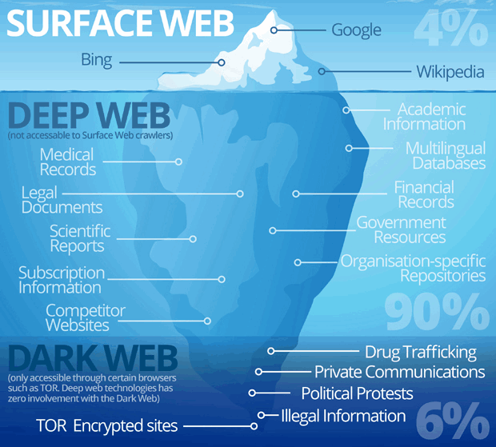

Introducción a la criptografía y seguridad
Table of Contents
La seguridad en computación es muy similar a la seguridad en la vida real. Uno dentro de su casa, sin nunca salir a la calle está seguro, no hay peligros ni riesgos que tomar (bueno, siempre hay pero son mínimos como ahogarse con una quesadilla). El peligro existe hasta que salimos afuera, al mundo exterior que está lleno de gente maldosa o descuidada; debemos tener cuidado con el paso de los coches, con que no te vayan a robar, bajarse en la estación correcta etc.
En computación pasa exactamente lo mismo. Una computadora utilizada en un sitio sin internet está segura (salvo que se incendie la casa). El riesgo comienza cuando nos conectamos con Internet. Internet es un lugar muy grande, lleno de mucha información para bien, pero tambien gente lacrosa; es el mundo real para las computadoras. Por lo que debemos de tener cuidado a la hora que naveguemos, ya que un click puede vaciarnos la cartera digital, similar a caer en una estafa piramidal.
Existen muchas personas que se dedican a analizar lo que pasa en internet, son tipos policías del internet. Muchas empresas invierten millones para poder tener a sus computadoras y clientes seguros en el mundo del internet. Hoy en día, la navegación por internet se ha hecho bastante seguro para todos los usuarios que no tienen mucho conocimiento. Sin embargo sigue existiendo este tipo de conexión con sicarios, hackers, mercado negro, información clasificada a través del internet oscuro o también concido como dark web; que es el equivalente a andar caminando en un barrio inseguro a medianoche.

Ya que las computadoras son las que viajan por internet debemos enseñarles seguridad a través de las matemáticas. Así la Criptografía y Seguridad son dos temas que están intrínsicamente relacionados en computación. No hay seguridad si no hay criptografía, que básicamente son el sustento matemático, además que toma en cuenta el poder computacional para asegurar la información.
1. Criptografía
Formalmente, es el estudio de cifrado y descifrado de información para proteger los datos de terceros no autorizados.
En escencia, tenemos dos partes que quieren comunicarse, normalmente llamados Allice y Bob a través de un canal inseguro, donde Charlie puede interferir cualquier mensaje que pase por este canal.

La idea es muy sencilla. Charlie no debe poder entender lo que dicen Allice y Bob, ni manipular lo que dicen. Fácilmente podrían Allice y Bob crear un sistema de claves, pero ¿cómo podrían pasarselo si Charlie intercepta el sistema de claves?
Muchos algoritmos se han desarrollado para poder cifrar la información, desde muy básicos como César, hasta muy avanzados como AES que tenemos a la mano como en una contraseña Wi-Fi WPA2.
Si bien, la teoría detrás de la criptografía es muy agradable e interesante (Teoría de grupos, teoría de números, probabilidad etc) en este manual solo rescataremos lo más escencial para poderlo poner en práctica, reforzando con la teoría.
2. Seguridad
La seguridad en términos de computación se refiere a la protección, de sistemas, redes y equipos de ataques digitales. Claramente protegerlo de entidades como Charlie.
La idea es poder utilizar software, configuraciones, políticas, y escaneo continuo para garantizar que la información no caiga en manos equivocadas y solo llegue a las personas correctas. Claramente a nivel de software, hardware y social como registrar todas las operaciones de una base de datos, que los paquetes pueden llegar a cualquier otra persona en la misma red, o que un trabajador no caiga en un fraude que ponga en riesgo toda la empresa.
Desde otro punto de vista, hay miles de ceros y unos pasando a través de las computadoras; debemos decidir qué flujos son buenos y malos.
En estas notas, nos centraremos en ambas desde un punto de vista práctico, aplicado con ejercicios y cómo podemos defendernos de ataques conocidos.